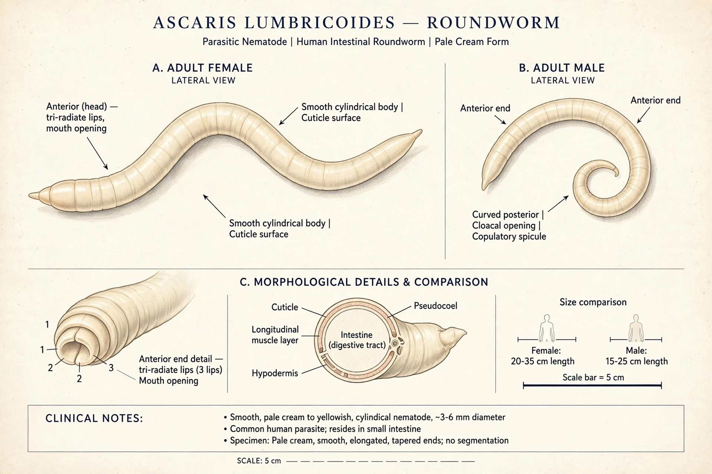

Ascariasis
| Ascariasis | |
|---|---|
 | |
| Specialty | Infectious disease |
| Cause | Ascaris lumbricoides |
| Transmission | Ingestion of eggs from contaminated soil, food or water |
| Treatment | Albendazole, mebendazole |
Ascariasis is a disease caused by the parasitic roundworm Ascaris lumbricoides. It is the most common helminth infection of humans, affecting roughly a billion people worldwide, particularly children in tropical and subtropical regions with poor sanitation. Infections are usually asymptomatic, especially when only a few worms are present.
Signs and symptoms
During the larval migration through the lungs, some people develop cough, wheeze, shortness of breath and a transient pneumonia-like illness (Löffler syndrome). Heavy intestinal infections may cause abdominal discomfort, malnutrition and impaired growth in children; a tangled mass of worms can obstruct the intestine, and migrating adult worms may block the bile or pancreatic ducts.
Life cycle
Eggs passed in faeces mature in soil over several weeks. When swallowed — on unwashed vegetables, in contaminated water, or from children's hands — they hatch in the small intestine. Larvae penetrate the gut wall, travel via the bloodstream to the lungs, break into the alveoli, ascend the airways, are swallowed again, and mature in the small intestine, where adults can live one to two years and grow to 15–35 cm. A female can produce around 200,000 eggs per day.
Diagnosis and treatment
Diagnosis is usually by identifying eggs in a stool sample under the microscope. Effective treatments include albendazole and mebendazole; pyrantel pamoate is an alternative in pregnancy. Obstruction may require surgery.
Prevention
Prevention depends on improved sanitation, safe disposal of faeces, hand washing, and washing raw vegetables. The World Health Organization recommends periodic mass deworming of children in endemic areas.
See also
This article is a recreation written from memory for the muse-webcrawl project.